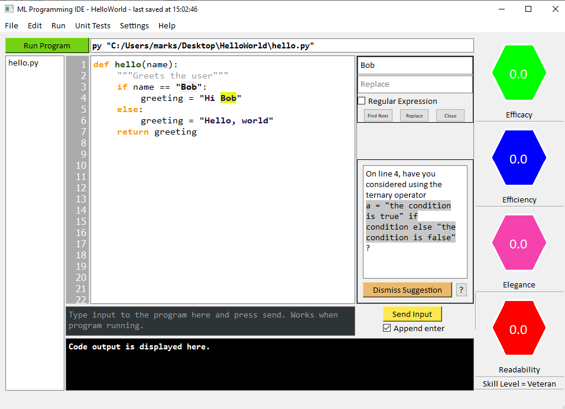

ML Programming IDE Tutorial
Welcome to the ML Programming IDE
The ML Programming IDE is a tool designed to help you write better code in the Python programming language.
Introduction to the IDE
- When you open the IDE, you will see the following load screen:
- The left hand side of this screen launches the main IDE, in which you can code in Python. You can either start a new project or open an existing one once you have created one.
- On the right hand side, the "Learn something new" button will take you to an interesting programming resource to learn more about Python. As you code every day, the IDE tracks your progress and maintains a skill level which represents how good it thinks you are at programming. The resource shown when you click "Learn something new" is tailored to your skill level. See below for more information about skill levels.
- The icon at the top of the window, in this case of a wizard, is the avatar associated with your skill level, in this case "Veteran".
- Clicking on one of the left hand buttons to open the main IDE, we see this screen:
- Programs in this IDE are organised around Projects. These are directories/folders which contain all of the code for a specific project, and a metadata file called a .mlideproj file. These are stored in JSON format, and can be opened with a simple text editor (e.g. notepad). Note that they are not by default associated with the MLIDE program, but you can change this simply by right clicking and opening one with the IDE. (in Windows). The file menu allows you to manipulate your project. You can create a new project or open an existing one. You can create a new file inside the current project, or add one which resides elsewhere on disk into the current project, opening it in the IDE.
- Now we have opened a project in the IDE, we can see some of its different parts
- On the far left we have the list of files menu, which shows all files in the current project. Clicking on one will show that file's data in the main window, and right clicking allows you to run file or copy file path.
- At the top, we have the run command box. In this box you can type a command which will be executed on your system when you click the big green run button next to it, which executes your program. If you're not sure, you probably want to type either python3 FILEPATH_TO_EXECUTE (Linux) or py FILEPATH_TO_EXECUTE (Windows).
- When you have finished writing your program in the main programming window, you can run it. To enter input to the program, you type it in the dark grey box in the bottom third of the screen. To send the input to the program, click "Send Input". This way you can paste or mainpulate input there and then before sending it. Don't forget to tick/untick the "Append Enter" checkbox. This box determines whether or not a newline (\n) character will be added to the end of your input, which will, for many programs, submit/confirm the input typed (e.g. python input() command).
- At the bottom, we have the execution results window, which displays the result of the program's execution, when it is run.
- The next column across from the main section is the comment window. In this pane, an AI "expert system" makes comments on the code you have written, in terms of how it can be improved. In this pane you'll see comments about using new Python techniques like list comprehensions or, in this case, the ternary operator or suggestions of links you could visit to find out how to make your code more efficient.
- In the same vertical pane as the comments, we also find the find-replace box, which appears when one presses Ctrl-F and can be used with regular expression searches as necessary.
- On the far right, we have the scores pane. This contains 4 coloured hexagons, each with a score out of 10, to 1 dp. Your code is dynamically assessed by the IDE to determine how effective, efficient, readable and elegant it is, and as you type you will see these scores update. Of course the aim is to get them as high as possible. To get some inspiration for how to improve your scores, you can right click on a given score hexagon. If you don't want a particular score at any time, left click it to disable.
- At the top of the IDE, we have the menu. Most of the options are self-explanatory, so won't be discussed here. The Unit Tests tab is potentially different to many existing IDEs, and is one of the more powerful features of this program, and so will be explained in detail:

- Clicking Enter Unit Tests brings up the unit test entry window for the current project.
- In the MLIDE, (and elsewhere) a unit test is a black box input/output test that can be run against a subroutine inside your code, to check whether it is working or not. You specify some input to the subroutine, and the subroutine is run with that input. Then, the output from the subroutine is compared to the output you specify, which should correspond to this input. If they match, that's a pass, otherwise the test is failed. These tests are useful because they can help you track your progress when writing code designed module by module, and they can also help to find errors, as you can locate exactly which subroutine is not working. This can be useful for debugging and for checking that any changes you have made to one part of your program have not broken the rest of it.
- As unit tests are run on a function by function basis, unit tests in this IDE are stored with their corresponding functions, so to make one, you first need to specify the function it will run against, the number of input arguments to the function, and the file in which you will code that function. It is recommended to create all unit tests before starting programming so you don't forget what your program was designed to do.
- Adding a function creates a table like the one we can see in the right hand image above. Each row (apart from the first two) represents one I/O test. The add test button will add an additional row in the table, so you can write more than one test per function. The top two rows can be used to provide documentation about the input and ouput of the functions, i.e. what datatypes these should have and the constraints on their values. These are used when estimating the algorithmic complexity of the functions (see below). Constraints are specified as a list of lists. Each internal list specifies one constraint on the input/output (see below); be aware that the Constraints box data is interpreted as a python literal. Currently the available constraint values are quite limited, but these may be extended in the future.
- Valid Types and Constraints
- Type: Int, Constraints: ["Range",minValue,maxValue]
- Type: Float, Constraints: ["Range",minValue,maxValue]
- Type: String, Constraints: ["Length",minLength,maxLength] ["Alphabet",possibleCharacters]
- Type: ListInt, Constraints: ["Length",minLength,maxLength]
- Type: ListBool, Constraints: ["Length",minLength,maxLength]
- Type: ListFloat, Constraints: ["Length",minLength,maxLength]
- Once unit tests have been entered, and saved, you can run them against your code at any time by selecting Display Test Results or pressing Ctrl-F5. The following window appears, detailing for each function the tested inputs, expected outputs, actual outputs, pass/fail and time taken.
- Perhaps the most exciting part of the Unit Test interface is the ability for the algorithmic complexity (efficiency) of the user's functions to be estimated. In order for this to happen, the function needs a valid unit test and set of input types (and optionally constraints). Currently, complexity estimation only works for functions which take exactly 1 argument. Note that the complexity analysis involves empirical observation by execution of the code. I.e your code is run with a variety of different input sizes (usually large) to estimate the complexity, meaning it is slow and can be incorrect. The complexity analysis is automatically performed for you in the background every so often, so clicking on the Display Complexity Analysis Results option will display the most recent results if these are available. If the results do not seem to be updating, first wait 5 minutes with the IDE open, then reopen the complexity analysis results, and then try closing the IDE and reopening if this doesn't work. When we click on the option and complexity results are available, we see the following window:
As you can see, an estimated time complexity in big O notation is provided for each function which had unit tests and types.
- Clicking Enter Unit Tests brings up the unit test entry window for the current project.
Skill levels
Your skill level is determined by a Machine Learning algorithm running on the code you write every day. It can take one of five values. Each of these values has its own avatar, which is displayed in the load screen.
As alluded to above, the skill level is linked to the resources displayed when you click "Learn something new" in the load screen. The resources shown come from the programming website GeeksForGeeks. Each skill level in this program is matched to one level of GeeksForGeeks resource, so you should get something that's just the right level for you:
| Avatar | MLIDE User Skill Level | GeeksForGeeks Article Difficulty Level |
|---|---|---|
 | Novice | Basic |
 | Student | Easy |
 | Adept | Medium |
| Veteran | Hard | |
 | Master | Expert |
Code Scores
The code scores displayed in the Hexagons reflect how good the program thinks your code is. They are from 0-10 to 2sf, but note that it isn't always possible to achieve maximum score for certain tasks. The scores are generated in the following way:- Efficacy Scores: The score is the percentage of the entered unit tests that your code is currently passing, scaled to be out of ten
- Elegance Scores: The score is a combination of the readability score, the number of available elegance suggestions (comments) which the user has not yet taken on board or rejected as wrong, repetition and length of code
- Readability Scores: The score is determined by a machine learning algorithm trained on the Dorn dataset
- Efficiency Scores: The score is a simple transformation of the average complexity of subroutines in your project, so that the more efficient your subroutines are on average (by complexity estimation), the higher the score. Of course some tasks cannot be achieved in certain complexities (e.g. comparison sorts are limited to O(nlog(n))), so this may be less beneficial than the other scores.
Frequently Asked Questions (FAQs)
- Is the program portable (as in can you run it on different OSes)?
- Is the program portable (as in can you run it from a USB stick)?
- Can the program be run from the command line?
- Can I change the suggestions made on my code e.g. to remove some triggers or add my own?
- Is the program open-source?
- Why doesn't it work? GRRRRRR?
Yes. You should be able to run the program on different OSes, but you will need to compile it for the OS you want to use it for. The program is written in Python with the cross-platform PyQt windowing system, and compiled with Pyinstaller. Visit the program's GitHub repository to download the source code and compile it for a different OS using PyInstaller
Yes, it should be. The program has some dependencies so you should make sure to copy the whole program directory and not just the exe file onto the USB. If any aspects of the program are not working on the USB stick, please open an issue on the program's GitHub repository.
Yes, although the accepted arguments are quite basic. Either run the executeable on its own from the command line to execute the IDE as normal, or put the path of the mlideproj file you want to open with the IDE as the first and only argument
Yes - simply edit the Syntax_Rules.txt file distributed with the program. The format of this is as follows: Each line has a regex, without flags detailing what to match, followed by ;; and the suggestion text. #To comment out a line (stop it from being processed, as in Python)
Yes. Please see the GitHub repository.
Please see the below list of troubleshooting fixes. Note that the program is only fully tested to work on Windows, so you may experience problems on other OSes, although it should work. If your problem is not listed below, open an issue on the program's GitHub repository
| Problem | Suggested solution |
|---|---|
| The unit tests are failing despite the function being correct | Make sure that the function is defined inside a file which contains no other print statements accessible from the external scope, and that the function itself contains no additional print statements. When the tests are run, the file is imported into a temporary script which runs the function. This import will execute any code outside of the functions (in global scope) in the file, which could lead to output. |
| The run file and unit test functionality is not working | This may be due to python being installed under a different command name than expected on your system. The IDE relies on an existing installation of python on your computer in order to work. It assumes that on Windows the command to run python is py and on Linux that it is python3, but this may not be the case, especially if you have a different python installation to CPython. Open the settings and enter the command that you use to run python at the terminal |
| The unit test has an error when I haven't even written the function yet! | This is normal behaviour. An error is created when the IDE tries to run the function named in the unit test when it's not yet defined. However, this is useful as it reminds you to make the function! |
| I copied a project from my friend's computer and it won't open on mine | Open the mlideproj file in another text editor e.g. notepad and check that the filepaths are correct for your system. |
| When I double click on a mlideproj file it doesn't open with the IDE | On windows you can select open with, more apps, look for another app on this PC, then find the MLIDE executable. You should then be able to double click on mlideproj files and have them open in the MLIDE. To open them with a different program e.g. for troubleshooting, you can do the same thing again. |
| The program is hanging/not responding when I try to run unit tests | You must avoid putting any input() commands inside a function to be unit tested. Instead, all data must be passed in via arguments, because user input is not a feature of the unit test interface. Close the IDE and reopen it. If it crashes again, use a different text editor to edit the offending python file to comment out any input statements before reopening. |
List of keyboard shortcuts
| Shortcut | Action |
|---|---|
| Ctrl-W | Close window |
| Ctrl-Return/Ctrl-Enter | Send input to code |
| Ctrl-R | Focus run command box |
| Ctrl-I | Focus shell input box |
| Ctrl-F/Ctrl-G/Ctrl-H | Find/Replace |
| Ctrl-O | In load screen: open existing project In main IDE: Add file on disk to current project. |
| Ctrl-N | In load screen: create new project In main IDE: Add a new file to the current project. |
| Ctrl-L | In load screen: learn something new (open resource) |
| Ctrl-S | Save project |
| Ctrl-Shift-O | In main IDE: Open project |
| Ctrl-Shift-N | In main IDE: New project |
| Ctrl-C | Copy |
| Ctrl-V | Paste |
| F6 | Format code (correct indentation - not 100% accurate!) |
| F5 | Execute project |
| Ctrl-T | Enter Unit Tests |
| Ctrl-F5 | Display Unit Test Results |
| Ctrl-Shift-C | Display Complexity Analyser Results |
| F11 | Open settings |
| F12 | Show tutorial - this one you're reading now! :) |
NB: As the program is open source, you can add any additional shortcuts as you wish, and compile a custom version of the program, or commit changes upstream with a pull request to the GitHub repository.